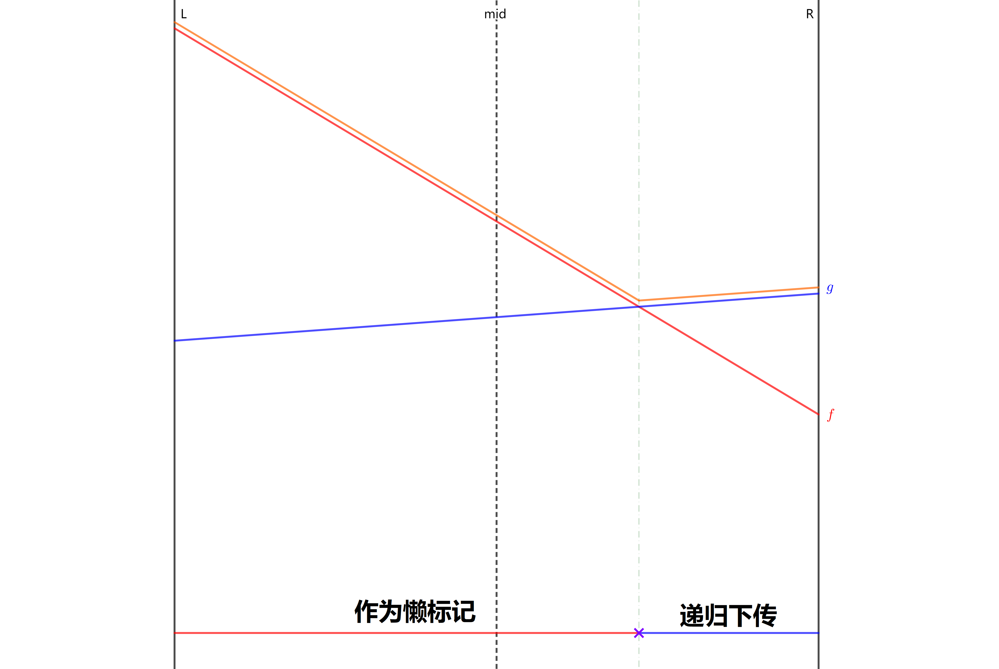
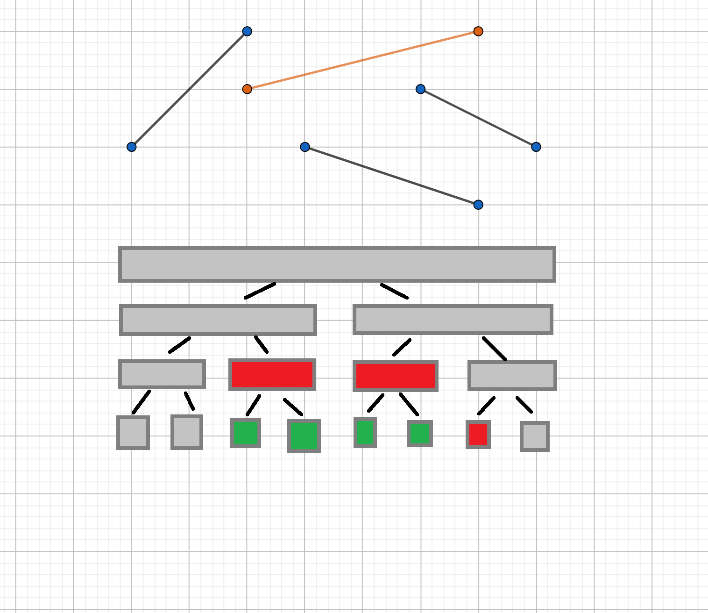

Li chao tree
引入
???+ note "洛谷 4097 [HEOI2013]Segment" 要求在平面直角坐标系下维护两个操作（强制在线）：
1. 在平面上加入一条线段．记第 $i$ 条被插入的线段的标号为 $i$，该线段的两个端点分别为 $(x_0,y_0)$，$(x_1,y_1)$．
2. 给定一个数 $k$，询问与直线 $x = k$ 相交的线段中，交点纵坐标最大的线段的编号（若有多条线段与查询直线的交点纵坐标都是最大的，则输出编号最小的线段）．特别地，若不存在线段与给定直线相交，输出 $0$．
数据满足：操作总数 $1 \leq n \leq 10^5$，$1 \leq k, x_0, x_1 \leq 39989$，$1 \leq y_0, y_1 \leq 10^9$．
我们发现，传统的线段树无法很好地维护这样的信息．这种情况下，李超线段树 便应运而生．
过程
我们可以把任务转化为维护如下操作：
- 加入一个一次函数，定义域为 $[l,r]$；
- 给定 $k$，求定义域包含 $k$ 的所有一次函数中，在 $x=k$ 处取值最大的那个，如果有多个函数取值相同，选编号最小的．
???+ warning "注意" 当线段垂直于 $x$ 轴时，会出现除以零的情况．假设线段两端点分别为 $(x,y_0)$ 和 $(x,y_1)$，$y_0<y_1$，则插入定义域为 $[x,x]$ 的一次函数 $f(x)=0\cdot x+y_1$．
看到区间修改，我们按照线段树解决区间问题的常见方法，给每个节点一个懒标记．每个节点 $i$ 的懒标记都是一条线段，记为 $l_i$，表示要用 $l_i$ 更新该节点所表示的整个区间．
现在我们需要插入一条线段 $f$，考虑某个被新线段 $f$ 完整覆盖的线段树区间．若该区间无标记，直接打上用该线段更新的标记．
如果该区间已经有标记了，由于标记难以合并，只能把标记下传．但是子节点也有自己的标记，也可能产生冲突，所以我们要递归下传标记．

如图，按新线段 $f$ 取值是否大于原标记 $g$，我们可以把当前区间分为两个子区间．其中 肯定有一个子区间被左区间或右区间完全包含，也就是说，在两条线段中，肯定有一条线段，只可能成为左区间的答案，或者只可能成为右区间的答案．我们用这条线段递归更新对应子树，用另一条线段作为懒标记更新整个区间，这就保证了递归下传的复杂度．当一条线段只可能成为左或右区间的答案时，才会被下传，所以不用担心漏掉某些线段．
具体来说，设当前区间的中点为 $m$，我们拿新线段 $f$ 在中点处的值与原最优线段 $g$ 在中点处的值作比较．
如果新线段 $f$ 更优，则将 $f$ 和 $g$ 交换．那么现在考虑在中点处 $f$ 不如 $g$ 优的情况：
- 若在左端点处 $f$ 更优，那么 $f$ 和 $g$ 必然在左半区间中产生了交点，$f$ 只有在左区间才可能优于 $g$，递归到左儿子中进行下传；
- 若在右端点处 $f$ 更优，那么 $f$ 和 $g$ 必然在右半区间中产生了交点，$f$ 只有在右区间才可能优于 $g$，递归到右儿子中进行下传；
- 若在左右端点处 $g$ 都更优，那么 $f$ 不可能成为答案，不需要继续下传．
除了这两种情况之外，还有一种情况是 $f$ 和 $g$ 刚好交于中点，在程序实现时可以归入中点处 $f$ 不如 $g$ 优的情况，结果会往 $f$ 更优的一个端点进行递归下传．
最后将 $g$ 作为当前区间的懒标记．
下传标记：
???+ note "实现" ```cpp constexpr double eps = 1e-9;
int cmp(double x, double y) { // 因为用到了浮点数，所以会有精度误差
if (x - y > eps) return 1;
if (y - x > eps) return -1;
return 0;
}
//...
void upd(int root, int cl, int cr, int u) { // 对线段完全覆盖到的区间进行修改
int &v = s[root], mid = (cl + cr) >> 1;
int bmid = cmp(calc(u, mid), calc(v, mid));
if (bmid == 1 || (!bmid && u < v)) // 在此题中记得判线段编号
swap(u, v);
int bl = cmp(calc(u, cl), calc(v, cl)), br = cmp(calc(u, cr), calc(v, cr));
if (bl == 1 || (!bl && u < v)) upd(root << 1, cl, mid, u);
if (br == 1 || (!br && u < v)) upd(root << 1 | 1, mid + 1, cr, u);
// 上面两个 if 的条件最多只有一个成立，这保证了李超树的时间复杂度
}
```
拆分线段：
???+ note "实现"
cpp
void update(int root, int cl, int cr, int l, int r,
int u) { // 定位插入线段完全覆盖到的区间
if (l <= cl && cr <= r) {
upd(root, cl, cr, u); // 完全覆盖当前区间，更新当前区间的标记
return;
}
int mid = (cl + cr) >> 1;
if (l <= mid) update(root << 1, cl, mid, l, r, u); // 递归拆分区间
if (mid < r) update(root << 1 | 1, mid + 1, cr, l, r, u);
}
注意懒标记并不等价于在区间中点处取值最大的线段．

如图，加入黄色线段后，只有红色节点的标记被更新，而绿色节点的标记还未被改变．但在第二、三、四个绿色区间的中点处显然黄色线段取值最大．
查询时，我们可以利用标记永久化思想，在包含 $x$ 的所有线段树区间（不超过 $O(\log n)$ 个）的标记线段中，比较得出最终答案．
查询：
???+ note "实现"
cpp
pdi query(int root, int l, int r, int d) { // 查询
if (r < d || d < l) return {0, 0};
int mid = (l + r) >> 1;
double res = calc(s[root], d);
if (l == r) return {res, s[root]};
return pmax({res, s[root]}, pmax(query(root << 1, l, mid, d),
query(root << 1 | 1, mid + 1, r, d)));
}
根据上面的描述，查询过程的时间复杂度显然为 $O(\log n)$，而插入过程中，我们需要将原线段拆分到 $O(\log n)$ 个区间中，对于每个区间，我们又需要花费 $O(\log n)$ 的时间递归下传，从而插入过程的时间复杂度为 $O(\log^2 n)$．
??? note "[HEOI2013]Segment 参考代码"
cpp
--8<-- "docs/ds/code/li-chao-tree/li-chao-tree_1.cpp"
合并
类似于普通线段树的合并，我们定义以下过程来将两个李超线段树节点 $u,v$ 合并，并以 $u$ 作为新的根．
-
如果 $v$ 为空，结束过程．
-
如果 $u$ 为空，将 $v$ 复制给 $u$．
-
将 $v$ 对应线段插入到 $u$ 为根的子树．
-
递归将 $u,v$ 的左右子树对应合并．
若合并若干李超线段树涉及的总点数为 $n$，则该过程的复杂度为 $O(n\log n)$：对于任意线段在树上对应的节点，每次涉及移动它时，我们要么使其深度 $+1$，要么直接从树上删除，这两个操作的代价都是 $O(1)$ 的，而每个点深度至多为 $O(\log n)$，于是复杂度如上．
???+ note "实现" ```cpp void upd(int &root, int cl, int cr, int u) { // 涉及多棵李超线段树合并，使用动态开点． static int idx = 0; if (!root) { s[root = ++idx] = u; return; } int &v = s[root], mid = (cl + cr) >> 1; int bmid = cmp(calc(u, mid), calc(v, mid)); if (bmid == 1 || (!bmid && u < v)) swap(u, v); int bl = cmp(calc(u, cl), calc(v, cl)), br = cmp(calc(u, cr), calc(v, cr)); if (bl == 1 || (!bl && u < v)) upd(ls[root], cl, mid, u); if (br == 1 || (!br && u < v)) upd(rs[root], mid + 1, cr, u); }
int merge(int &u, int &v, int l, int r) {
if (!u || !v) {
return u + v;
}
if (l == r) {
int b = cmp(calc(s[v], l), calc(s[u], l));
if (b == 1 || (!b && s[v] < s[u])) return v;
return u;
}
upd(u, l, r, s[v]);
int mid = (l + r) >> 1;
ls[u] = merge(ls[u], ls[v], l, mid);
rs[u] = merge(rs[u], rs[v], mid + 1, r);
return u;
}
```